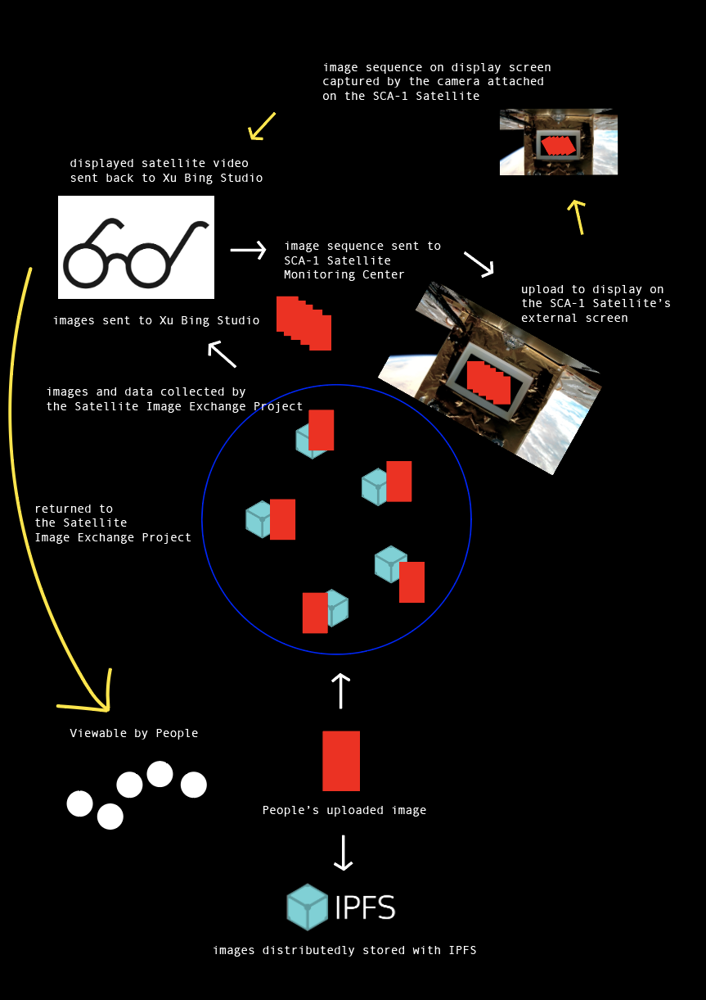

* from “People’s Images" in exchange for "Satellite Network Imagery” *
This web-based project invites people to capture and upload images of "the World We See" in hope to send to Space to be viewable by the public. Collected People’s Images, stored on
IPFS,
along with their metadata, will be used to exchange for satellite imagery in a graph of the Image Chain and other geopolitical, energy, and climate information between the People and the Satellite, ultimately to be displayed on the screen of the satellite SCA-1
(NORAD ID 58924) until it’s transmitted back for People’s viewing.
This is a commissioned and collaborative work for the Star Chain of Arts Project at the Xu Bing Space Art Residency Program.
Made by hua xi zi and Patrick O'Shea.
*
*
*
*
*
*
******
How your images will end up on the satellite to be viewable by the public:
